Fun around Nashville
July 2019

In July 2019 we spent time around Nashville.
The day centered on the Parthenon in Centennial Park and the colossal Athena statue inside — with my redhead companion — plus a riverfront stop before heading out.


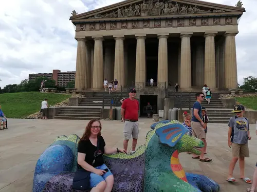

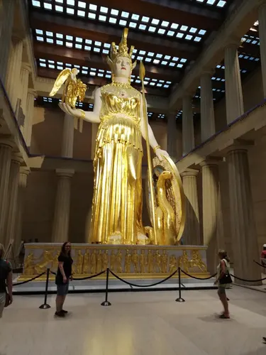

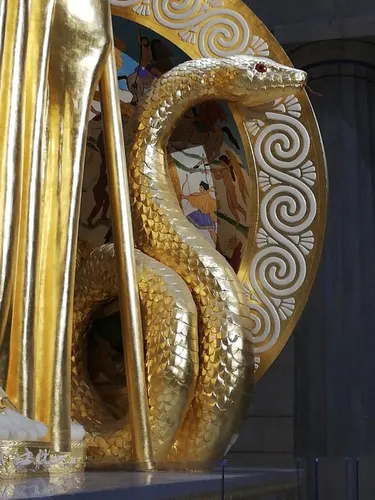

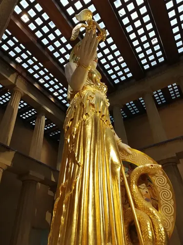

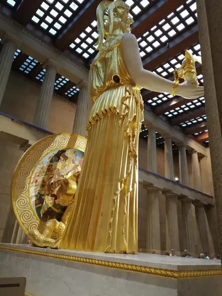

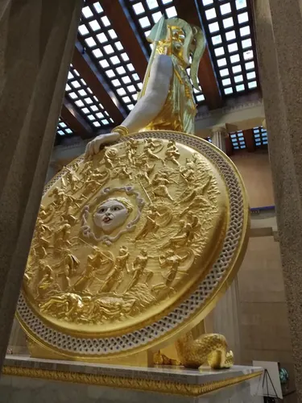

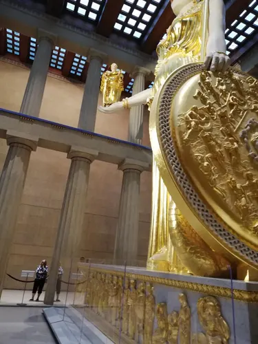

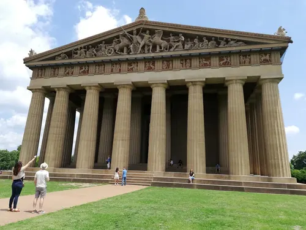

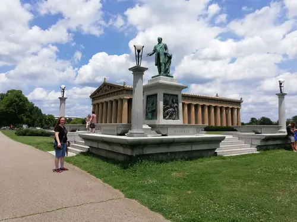

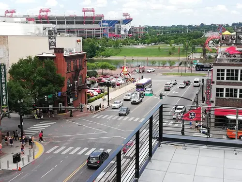

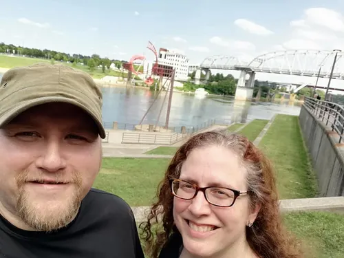